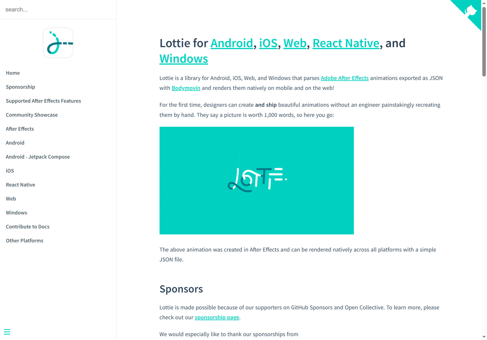
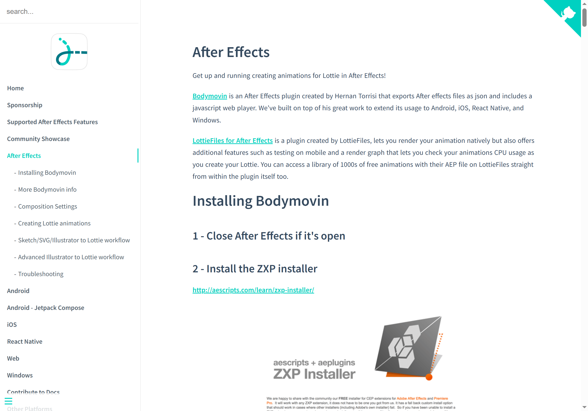

终于把设计稿里的动效原样搬上线了——Lottie 上手体验
做了三年前端，第一次让设计师在 After Effects 里做的动画不打折扣地出现在产品里。Lottie 这套链路跑通后，设计和开发之间的那堵墙好像真的被拆了。
上个月产品经理甩过来一个需求——新用户引导页要加一组品牌动效，logo 要从碎片拼合成型，还要跟着用户的滚动手势做缩放和位移。搁以前，我要么让设计导出 GIF 凑合用，要么自己用 CSS keyframe 一点一点抠——两种方案都不叫人省心。
这次我咬咬牙说：给我一周时间，试试用 Lottie 做。
第一天装好，第一眼就觉得这东西方向对了
说实话，刚开始我对 Lottie 没抱太高期待。动效方案我试过不少，从 GIF 到 SVG+CSS 动画，再到 Android 原生的 Vector Drawable，每一样都有各自的毛病——不是体积大就是跨平台不一致，要么就是设计端和开发端之间总有一道翻译不出的坎。
后来上它的官网扫了一眼介绍，思路其实挺直接的：让设计师在 After Effects 里做动画，通过一个叫 Bodymovin 的插件直接导出一份 JSON 文件，然后各平台的 SDK 原生解析这份 JSON 来渲染。相当于在设计工具和运行时之间立了一个标准格式。

我先装了 Web 端的 SDK，npm install lottie-web 一行搞定，不想走包管理器的也能从官方下载直接拿预构建版本。然后把设计导出的 JSON 文件丢进去，用 lottie.loadAnimation() 创建一个实例，指定一下容器元素，跑起来了。
一秒都不到，那个碎片拼合的 logo 动效就在浏览器里完整呈现了。
我当时的反应是：就这？这就完了？
真的就是这么简单。之前我估算用 CSS 手写这组动画得花两三个小时，还要反复调贝塞尔曲线和时间轴，最后出来的效果和设计稿大概率还有偏差。现在设计师给了一份 JSON，我把它放进资源目录，加几行初始化代码，完事。
跑起来之后，才发现好处不止"省时间"
初体验最惊艳的是跨平台一致性。我同一个 JSON 文件，在 Chrome 里播一遍，在 iOS 模拟器里跑一遍，在 Android 真机上再看——效果完全一样。这在以前是不敢想的事。CSS 动画在不同浏览器上的行为差异我不想再吐槽了，同一个 keyframe Safari 和 Chrome 渲染出来的速度曲线都能不一样。
然后是体积。那组 3 秒的拼合动画，JSON 文件只有 47KB。设计师说如果导出 GIF 的话至少 300KB 起步，而且在高清屏上会糊——因为 GIF 是像素格式，Lottie 是矢量，屏幕分辨率再高也不会失真。
还有一个我没预料到的好处：可控制。Lottie 不是只能自动播放的动图，它有一套完整的 API，可以随时 pause、play、seek 到某一帧，具体参数去Lottie文档里翻就行；还能监听进度。用户滚动的时候触发缩放，点击的时候跳到某个状态，这些之前靠一堆 CSS 状态切换和 JavaScript 监听来实现的交互，现在只要调几个 API 就行。
不过体验了几天后，也摸到了一些让我头疼的地方。
也有真·坑，不是小瑕疵
第一个坑是After Effects 不是所有特性都能导出。设计师那天兴冲冲地在合成里加了一个 3D 层的粒子特效，Bodymovin 导出直接报红——不支持。还有表达式，如果设计师写了比较复杂的 AE 表达式脚本，也需要预烘焙或者干脆改掉。这意味着团队得先对设计师做一轮"Lottie 能做什么、不能做什么"的培训，不然每次导出都能撞上墙。
第二个坑是SDK 本身的体积。Web 端 gzip 后大约 40KB，不算特别大，但如果页面本身已经很重了，这 40KB 也得掂量掂量。Android 和 iOS 端的 SDK 更重一些，需要评估包体影响。
第三个坑是出问题时调试不像普通代码那样直观。JSON 文件就是一坨嵌套的配置数据，图层名、属性名、关键帧信息都在里面，但你很难一眼看出哪里出了问题。我有一次在 iOS 上发现动效比预期慢了半拍，排查了半天才发现是设计师在合成设置里改了帧率但没告诉我。后来学会了把 JSON 直接拖到在线预览器里先验一遍——预览器里正常，到平台上就不会有问题，这步现在成了我的固定流程。

适合谁，不适合谁
跑了这组引导动效之后，我觉得 Lottie 的定位其实挺清晰的，不是万能但在自己的地盘里真的好用。
适合的场景：品牌动效、引导动画、状态切换、加载占位——这些需要设计端和开发端紧密配合、需要跨平台一致、需要一定交互控制的场景。如果你的团队已经有 AE 设计师，或者愿意让设计师上手在线制作工具，那这条链路跑通之后效率提升是肉眼可见的。
不太适合的场景：纯 Web 端几个简单的 loading spinner、hover 效果——这种用 CSS 写比引入 Lottie SDK 还轻。还有那种非常复杂的逐帧手绘动画，比如游戏里的角色攻击动作，PNG 序列帧的视觉保真度还是更高，矢量格式表达不了那种细节。
另外如果你的团队还没动效设计师，想让前端自己从零开始做 Lottie 动画——这条路比较长。Lottie 在线制作工具虽然降低了门槛，但做出有设计感的动效还是需要动效设计的底子，不是纯编程思维能搞定的。
最后
这一周跑下来，Lottie 给我的感觉是终于有一个动效方案让设计和开发不再互相扯皮。设计师在自己熟悉的工具里做动效，导出一份标准格式的文件；开发端不需要做任何"翻译"工作，直接用 SDK 加载就能跑。中间那层 JSON 是真正的中间人，把双方的工作隔开又连起来。
当然它不是银弹，有自己的边界和坑需要踩。但在跨平台品牌动效这个具体场景里，我没见过比它更顺手的方案。如果你的产品也有类似需求，值得花一周试一下——就从一个简单的 loading 动画开始，体验一下整个链路跑通是什么感觉。这套资料我分别传到了GitHub、Gitee和GitCode上，不同网络环境的同学按需取用就行。